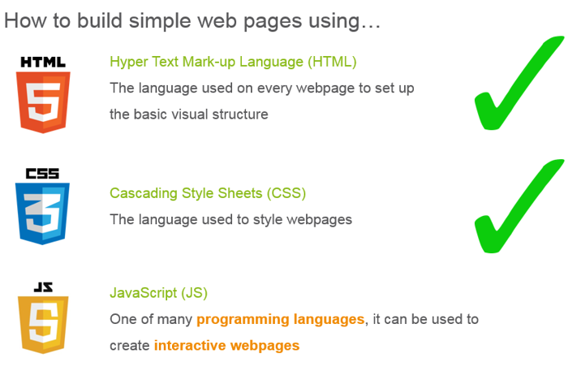
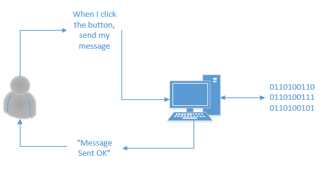

class: center, middle, inverse
Javascript (A Taster)
What we have done so far ...

What is a programming language ?

- A programming language is a bridge between human and computers
- A developer breaks a task down into a list of steps written in Javascript or some other language for the computer to follow
- The computer then translates those steps into machine code and uses that to carry out the task
JavaScript
- JavaScript (JS) is the most popular programming language in the world
- We can use it to make our web pages more interesting
For example:
- We can use it to make things move around the page when a button is clicked
- We can take inputs from visitors to our web page, do calculations and give back a result
- We can hide and show things on the page
Objectives
The following slides are intended to a brief overview of the programming language JavaScript
It is a very powerful programming language originally developed in 1995 to run in web browsers.
It is also used as a server programming language and is also popular on devices such as the Raspberry PI and BBC Microbit
JavaScript is also called ECMAScript (created to standardize JavaScript). We will be using some features from the current standard ES6.
Caveat
- There is plenty missing from this presentation.
- Explanations are intended to give a starting point.
- There is an expectation that you will use other resources when learning.
Resources (Examples)
Values
The simplest construct in JavaScript is a value
3
When JavaScript comes across a number it recognises (evaluates) as a number. A statement in JavaScript typically ends with a semi-colon:
3;
This statement is a valid JavaScript program. JavaScript will:
- evaluate the number 3
- then forget it (more on this later)
Types
Values are categorised by type in JavaScript. The ECMAScript version 6 specifcations defines the following types:
- Number (e.g. 1 or 1.235)
- Strings (e.g "Hello" or 'Bob')
- Boolean (True or False)
- Object
- Undefined
- Null
- Symbol
A Function is a special kind of callable Object.
An Array is also an object, with special syntax.
??? We will cover the basic usage for Number, Strings, Boolean and Object
In programming the definition of "nothing" can sometimes be challenging. In Javascript two types Undefined and Null are two ways of defining "nothingness" We will see these later.
We won't be covering symbol here (new in ES6). Interesting dicussion on Symbol:
https://www.keithcirkel.co.uk/metaprogramming-in-es6-symbols/
Operators
JavaScript has certain pre-defined operators, for example +,-,*,/,%,typeof
The + operator can be used to add two numbers together.
3 + 4;
JavaScript will evaluate this to 7.
Strings
Values are recognised as Strings when surronded by quotes, for example;
"Hello";
The + operator works with Strings but concatenates Strings, creating a new String;
"Hello " + "World";
Trying JavaScript
For the next few exercises we can use the following link to try out basic JavaScript
class: exercise
Evaluate Numbers
Type in the following (seperately) and click "Evaluate"
3
3+4
3*4
6 / 2
6 / 0
0.1 + 0.2
class: exercise
Evaluate Strings
Type in the following (seperately) and click "Evaluate"
hello;
"Hello";
'Hello';
"Hello " + "World";
String methods
JavaScript allows us to execute methods on Strings to manipulate them
see: w3Schools String Reference
for example:
"hello".toUpperCase()
converts "hello" to "HELLO".
class: exercise
String Methods
Type in the following (seperately) and click "Evaluate"
"HELLO".toLowerCase();
"Boolean".substring(0,3);
'#'.repeat(10);
Variables
Variables allow the program to remember and access variables. To do this we use the var keyword
var name;
We can assign a value to a variable:
name = "Bob";
We can also declare a variable and assign it a value in one statement:
var name = "Bob";
Note that the '=' is an assignment - not a comparison.
??? Point to note: Its advisible to consider this as two operations - declaration and initialise. This is becase that var declaratons are processed first, then the initialise
Later on "hoisting" of variables are discussed
Variables (let)
A new way to define variables is to use let
let name = "Bob";
name;
More on this later ...
class: exercise
Variables and Operators
Type in the following (seperately) and click "Evaluate"
var name = "Bob";
name;
var name = "Bob ";
'Hello ' + name;
let name = "Bob ";
'Hello ' + name;
class: exercise
Variables and Operators
Type in the following (seperately) and click "Evaluate"
var x = 3;
x * x;
var x = 1;
x = x + 1;
Increment and Decrement Operators
To increment a variable you can use a "short-cut"
x++
which may be used to replace
x = x + 1
However be careful because this operator first returns the value of x then increments it. For this tutorial we will not use it, but you will see it in examples around the web.
see: MDN Increment Operator)
Arrays
An array is a type of object that can hold multiple values. JavaScript denotes an array using square brackets. For example:
var names = []; /* Empty Array*/
var names = ['Billy','Bob','Bertie'];
names[0];
To get the first element of the array you specify the variable with an index. The first value in an array has an index of 0
JavaScript will evaluate the above statement to 'Billy'
Note: The "/* Empty Array*/" is a comment in JavaScript code.
class: exercise
Arrays
Type in the following (seperately) and click "Evaluate"
var names = [];
names.length;
var names = ['Billy', 'Bob', 'Bertie'];
names.length;
var names = ['Billy', 'Bob', 'Bertie'];
names[0];
var names = ['Billy', 'Bob', 'Bertie'];
names[2];
var names = ['Billy', 'Bob', 'Bertie'];
names[3];
Console
A convenient way to output values when testing or developing simple algorithms is to print the results out on the console. Try this:
console.log("Hello World");
In our editor we are using a "fake" console. Later we will see an example of an actual console.
Note that the console output is different from the evaluation result.
For Loop
We can perform something many times by using a loop construct.
for (let i = 0; i < 10; i = i+1) {
/* Do Something */
}
The for loop construct can be read:
- Given a counter i that starts at 0.
- If the counter i is less than 10
- Do something
- Add 1 to the counter i.
see: https://www.w3schools.com/js/js_loop_for.asp
For Loop - Example
Print out the numbers between 0 to 9.
for (let i = 0; i<10; i=i+1) {
console.log(i);
}
Exercises
Using a for loop:
- Print out numbers from 1 to 10
- Print out numbers from -1 to -10
- Print out numbers from 2 to 20 that are divisible by 2.
- Print out all the elements in the array ["Billy","Bob","Bertie"]
For Loop
Prefably use let with a for loop
for (let i = 0; i<10; i=i+1) {
console.log(i);
}
alternatively using the var keyword ...
var i;
for (i = 0; i<10; i=i+1) {
console.log(i);
}
But why the difference ? ....
var vs let (Scope)
Oh dear. Here we introduce a "Gotcha"
Variable declations are processed before any other instruction.
Variable assignment is executed in place
To avoid confusion always declare variables using var first
This depends on where the variable is defined (Scope) and will be covered later.
For more info see https://www.w3schools.com/js/js_hoisting.asp
let allows you define a variable to the block it belongs.
Example, Histogram
To examine some of the concepts we have covered we will create a simple 'program' that given an array of numbers, e.g 1,2,4,8,16 will print the numbers out horizontally in graphically, e.g:
#
##
####
########
#################
class: center, middle
Demo
Example, Histogram
Given a array of numbers display a left to right histogram
var data = [1,24,4,8,18]; /* can use let or var */
for (let i=0 ; i < data.length; i = i+1) {
console.log("#".repeat(data[i]));
}
Example, Histogram (alternative)
Given a array of numbers display a left to right histogram
var data = [1,24,4,8,18];
for (let i=0 ; i < data.length; i = i+1) {
let count = data[i]
let graphString = '#'.repeat(count)
console.log(graphString);
}
Example, Histogram (alternative using var)
var data = [1,24,4,8,18];
var count;
var graphString;
var i;
for (i=0 ; i < data.length; i = i+1) {
count = data[i]
graphString = '#'.repeat(count)
console.log(graphString);
}
Functions
Functions are incredlibly powerful, especially in JavaScript. One on the most important aspect of functions in JavaScript is that they are assigned to a variable.
var squared = function(x) { return x * x };
The statement above defines a function that takes an argument x. When it is executed the function will return the square of x.
We can get JavaScript to evaluate the function by:
squared(2);
class: exercise
Functions
Type in the following (seperately) and click "Evaluate"
var hello = function() { return "Hello"};
hello;
var hello = function() { return "Hello"};
hello();
var hello = function(name) { return "Hello " + name } ;
hello("Bob");
Function Declaration (alternative)
Another shorthand way of declaring a function is:
function hello(name) { return "Hello " + name; }
Which is (nearly) equivalent to
var hello = function(name) { return "Hello " + name; }
(There is a difference, on where the function is effectively declared).
Function declaration (new)
There is also a new way to create functions using the "arrow syntax"
var hello = (name) => { return "Hello " + name;}
Objects (first look)
JavaScript objects can act as a container for values (including arrays, and functions). An object can just about represent anything.
An object has properties (variables within an object) that hold values.
Consider this:
var person = {}; /* Empty Object */
var person = { name: "Trinity"}
I can access the properties of the object, for example.
person.name
Objects (first look)
Alternatively the property can be accessed by using the following syntax
person["name"]
Setting Object Properties
In JavaScript I can also create and set properties like this:
var person = {};
person.name = "Morpheus";
or
var person = {};
person["name"] = "Morpheus";
class: exercise
Objects
Type in the following (seperately) and click "Evaluate"
var person = {"name" : "Bob", "age" : 21};
person.name;
var person = {name : "Bob", age : 21};
person["age"];
var telephoneNumbers = {
"john": "11111",
"frank" : "2222",
"bob" : "3333"
};
telephoneNumbers.bob;
Objects(first look)
Objects are far more powerful than we have shown here.
We have created objects using the object literal syntax.
There are many different ways to create a use objects.
Comparisons
We can compare two values using comparison operators, for example:
1 == 1; /* Equals - evaluates to true */
1 == 2; /* Equals - evaluates to false */
1 != 2; /* Not Equal - evaluates to true */
1 < 2; /* Less than - evaluates true */
1 >= 2; /* Greater or equal to ... */
for more information see:
Code Blocks
We can put related statements of code into a code block, using braces "{" and "}"
for example:
var name = "Bob"
{
"Hello " + name;
}
This is not very useful, but they are used in other statements, including the creation of functions as seen before.
Conditional Statements
We can execute statements depending if a a condition is true using an ~if~ statement.
The If statement requires a Boolean followed by code block that is evaluated if the condition is true.
if (1 == 1) { "Yes" };
if (1 == 2) { "Yes" };
Note, that if the condition is false it evaluates to "undefined"
Alterantively, the else keyword can be to evaluate code when the condition is False.
if (1==1) {"Equal"} else { "Not Equal"};
class: center, middle, inverse
Javascript in the Browser
Javascript in the Browser
For this session we will explore the browser environment to try and get a feel for how web pages can be manipulated.
Environment
When a JavaScript program starts, the program is configured or provided with an envronment. For example an object is created that allows a program to output data (to the console):
console.log("Hello World")
class: exercise
The Web Browser Console
The Web Browser console and associated tools are a very useful feature.
Let's take a look ...
class: exercise
The DOM
As mentioned before, the Web Browser loads a web page into a data structure (DOM) as part of its environment.
Browser tools provide an inspector, that let you interrogate the DOM.
Let's take a look ...
Getting a DOM Object by ID
You can get a DOM object by its CSS selector. For example to get the first paragrpah:
var name = document.querySelector('p');
Setting DOM Content
You can set the value of a DOM object, for example
name.innerHTML = "<p>Bob</p>";
or
document.querySelector('p').innerHTML = 'Bob';
The Window Object
The Window Object of the DOM provides a number of objects and methods to the JavaScript environment, for example:
window.setInterval(myFunc,3000);
Properties and methods are exported to the global scope, so you can also use:
setInterval(myFunc,3000);
Note that the function myFunc is being passed as a value.
We will see this soon ...
Example, Write Several Messages to the Console.
As an example, say we want to messages on a web page, changing the message every 3 seconds.
To achieve this, I have a few examples that write messages to the console. We can then change this to execute in a web page.
The following example is intended to achieve the following
- Store an number of messages in an array.
- Provide a function that returns a message (the next message in the array).
- Log the message to the console.
Display Messages
let messages = ['Hello','Good Day', 'Good Afternoon', 'Good Evening'];
let index = 0;
let getMessage = function () {
let nextMessage = messages[index];
index = index + 1;
return nextMessage;
}
for (let i = 0; i<10; i = i+1) {
console.log(getMessage());
}
Display Message, a problem ?
There is a problem with the example, once all messages are printed the index is still incremented and therefore returns and 'undefined'
One way to do this, is to reset the index so it goes back to the start of the messages. We now always return a message.
Display Messages (Improved)
let messages = ["Good Morning", "Good Evening",
"Good Afternoon", "Good Night"];
let index = 0;
let getMessage = function () {
let nextMessage = messages[index];
index = index + 1;
if (index >= messages.length) {
index = 0;
}
return nextMessage;
}
for (let i = 0; i<10; i = i+1) {
console.log(getMessage());
}
Display Messages on a Web Page
To display messages on a web page we can include JavaScript within a <script> element.
JavaScript provides a function setInterval that allows us to call a function at a time interval.
The function can get a message from the message array and display the message by using the DOM.
Display Messages on a Web Pages
<body>
<p></p>
<script>
let messages = ["Good Morning", "Good Evening",
"Good Afternoon", "Good Night"];
let i = 0;
let displayMessage = function() {
document.querySelector('p').innerHTML = messages[i];
i = i + 1;
if (i >= messages.length) {
i = 0;
}
}
displayMessage();
setInterval(displayMessage,3000);
</script>
</body>